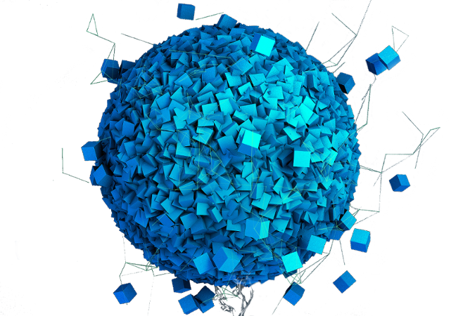
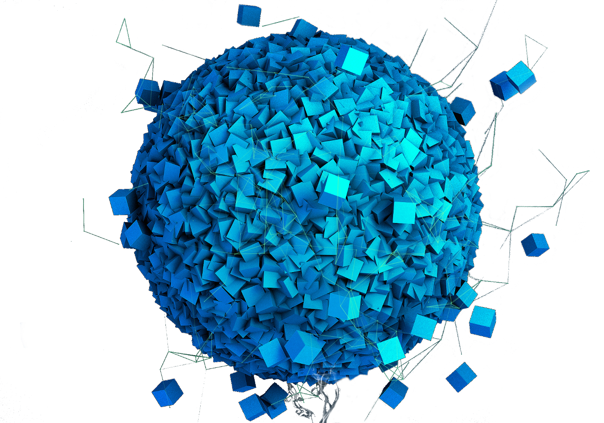
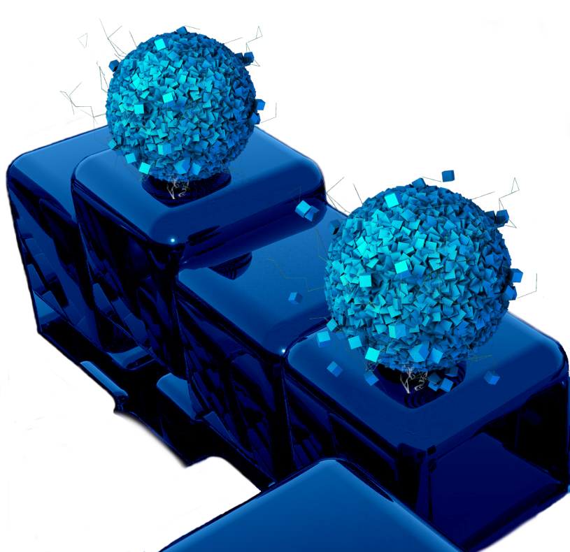

CYBERCORTEX


CYBERNETIC CORTEX
Coordinated | technological singularity
Semantic streams
Intelligent space, responsive to our feelings and thoughts. The virtual environment, which has become our boundless new hands, eyes, ears, nose, tongue, skin. The exit of a mind beyond the limitations of a body
Research process
Semantic streams make it possible to find people instantly in order to solve particular tasks collaboratively, thus fundamentally multiplying intellectual resources dedicated to their solution. Like never before in the history
Configuring tissues
Thanks to two-way communication with every cell of a body, we form human-computer connectome and are able to control all biophysical processes. We get the opportunity to modify and create evolving neural patterns
TOROIDAL LAYERS
Addresses- and requests-independent structured waves of data, circulating permanently
ASPECTS
Of the || construction | way
ENTRY
in a fundamentally new world
